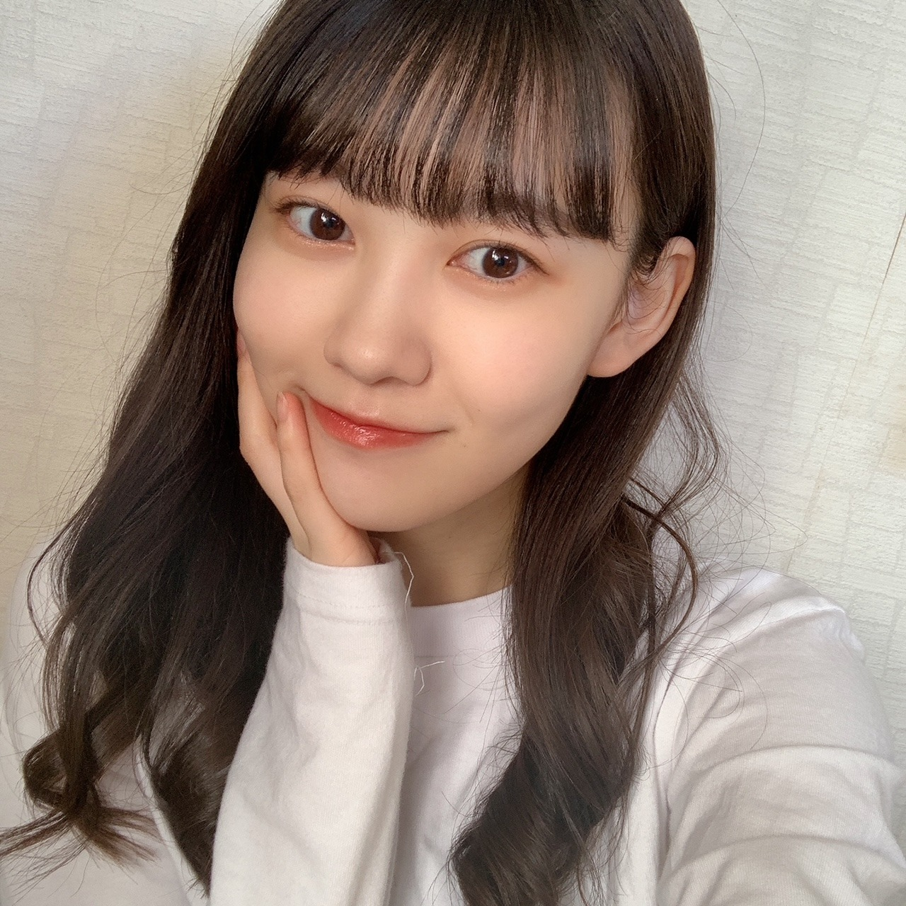

2020/1122Sunくま？☺︎弓木奈於
こんにちは！
こちらをクリックしてくださり、ありがとうございます☺️
乃木坂46 新4期生
京都府出身
弓木奈於（ゆみきなお）です( ˙༥˙ )

以前からリクエストしていただいていた、ハーフツイン
作ってみました\(ᯅ̈ )/
瑠奈ちゃんからは、このハーフツインでOKをいただきました☺︎
ここだけの特別です！
---------- ｷﾘｶｴ ---------
❁お返事のコーナー❁
⚫︎なおちゃんは、今特に話したい先輩はいますか？？？
心の底からの本音を言うと、全ての先輩とお話ししたいです！！
テスト期間中にも関わらずコメントありがとうございます(;_;)テスト応援しています✨
⚫︎ 冬の京都は何処が見所なの？
イルミネーションやライトアップも綺麗なので、おすすめです✨
雪が降っている季節にお寺めぐりをなさるとまた違った景色も見られます✨
京都は盆地なので夏は蒸し暑くて冬はとても寒いです( ›_‹ )
⚫︎奈於ちゃんはおでんの具で何が好きですか？
大根！( ｰ̀֊ｰ́ )✧
⚫︎ どのアプリを使ってブログを書いてますか？
メモに、消したり書いたり繋げたりしています( '-' )ง✧
⚫︎好きな女優さんは誰ですか？
天海祐希さん、小池栄子さんです！
⚫︎ お鍋がおいしい季節になったけど
これだけは外せないという具材はありますか？
ねぎ！( '-' )ง✧
⚫︎ クリスマスの日はクリスマスケーキとかチキンとか
食べる？？？
食べます！
去年は、アイスケーキと普通のケーキ２つも家族皆で食べました☺︎
やーい食いしん坊˙˚⸜(* ॑ ॑* )⸝˚˙
⚫︎ 奈於ちゃんは鍋何味が好き？
私はシンプルにお出汁だけで、ポン酢でいただく鍋が好きだったりします(∩ˊᵕˋ∩)･*
⚫︎ 好きなお寿司のネタは？
必ず食べるのは、サーモンです！
最近お寿司を食べていないので早く食べたいです(、._. )、♡
⚫︎ 読書の秋なので、せっかくだから本を読みたいと思っているけど自分は本を読むのが苦手です。何かおすすめの本ありますか？
高山一実さんの『トラペジウム』✨
最近は、平子祐希さんの『今日も嫁を口説こうか』を読んでいます！
私も本をあまり読まなかったのですが、短編集ですと読みやすいのかなと思います！
柚木麻子さんの『ランチのアッコちゃん』が好きです！
⚫︎ 私も関西人で、京都は良く行っでますが、有名な抹茶バームクーヘン食べた事ありますか？
食べた事がないです！食べてみたいです(∩ˊᵕˋ∩)･*
⚫︎ 私は朝がとても苦手なんですけど、
弓木ちゃんは朝得意な方ですか？
((･･ )( ･･))ｳｳﾝ
昨日目覚ましをかけようとした瞬間寝てしまって、ちゃんと起きる事が出来たけど物凄くヒヤヒヤしました！
⚫︎ 弓木ちゃんは小さい子好きですか？
はい！もちろんです☺︎
中学校の職業体験では、約一週間幼稚園の先生を体験させていただきました∗•*¨*⸜(´ ˘ `∗)⸝*¨*•∗
可愛いお話ありがとうございます☺︎
⚫︎ 質問というかお願い
仕事頑張れるように喝を入れてほしい笑
毎日お疲れ様です✨
私も一緒に頑張りたいです！
⚫︎ 勉強するときは音楽とか聴く派？
無音派です！
私の弟は、音楽を流しながら違う歌を歌いながらゲームしながら勉強していました（笑）
⚫︎ なおちゃんは、ブログ内で、(ざっくりか笑)とツッコンでるけど、
普段からツッコミやノリツッコミをする人ですか？
確かに！自分がボケてることに気がついたらツッコんじゃいますね！笑
⚫︎ 食べるパンの種類沢山ありますけど、どんなパンが好きですか？どんな物が、好きですか？
食パンを何もつけずに焼かずにそのまんま食べるのが好きです(◦ˉ ˘ ˉ◦)
⚫︎ 洋画や海外ドラマを見る時は字幕派ですか？吹き替え派ですか？
作品によります！動物が話してくれる系の洋画は吹き替えで視聴します( ˶˙ᵕ˙˶ )
⚫︎ 弓木さん！夜中に突然、部屋掃除したくなりませんか？！
私の場合、テスト前は部屋を掃除したくなりました！笑
⚫︎ クリスマスは何色のイメージですか？
黄色、赤、緑
ですかね(*´˘`*)✨
たくさん質問してくださって、ありがとうございます(TT)✨
お答えできていない質問もちゃんとお返事したいので、またお返事させてください( *ˊᵕˋ ) ⁾⁾
---------- ｷﾘｶｴ ---------
明日は黒見ちゃんです！
美佑ちゃん、茉莉ちゃんとぱると会えてめっちゃめちゃ嬉しかったね
可愛すぎたね( ｡･-･｡ )♡
最後まで読んでくださり、ありがとうございました✨

皆さんにとって、素敵な一週間になりますように...✨
本日もありがとうございました☺︎
2020/1121Sat幸せ色 松尾美佑
なんだか春みたいな天気ですね。
あったかくて、
風が強い。
不意に飛ばされないように気をつけましょう
( ఠ͜ఠ )
高校2年生
16歳
最近前髪が長かったので昨日の夜、何も考えないでタッタカ前髪切りました。
松尾美佑です。
ちょっと切り過ぎた所があったりなかったり。
まぁ、伸びるから。
大丈夫さ。
٩( ᐖ )۶
へへっ
前髪じゃなくて全体な髪の毛も割と伸びたなぁと最近思うことが多くて、
ちょこっと切りたいなぁって思ったりしていたりしていなかったり。

髪の毛まきまきした直後に撮ったのであんまり可愛いまきまきではないですね。
もーちょっと髪の毛同士が離れると良い感じですね
あ、お姉ちゃんの髪の毛まきまき借りました
私のは引き続き壊れ中です。
そして割れてしまった携帯画面なのですが、
内カメの所のヒビが写真に写らないかドキドキしていたのですが
頑張れば大丈夫そうです！
手がやや小さめ人間なので次の携帯は落とさないように小さめサイズがいいなと思い中です。
ちょっと最近の話をもうちょこっとしますね
前回寝坊したーって書いたら快適に起きれるアプリをコメントでオススメして下さって
ありがとうございました！
入れたんですよ、
そしたら何時間しっかり寝てたかとか、
眠りが浅い時に起こしてくれたり、
すっごく優しいんです。
お陰様で最近楽しく早起きできてます！
11月20日！
さやかちゃん！お誕生日おめでとう！
掛橋ちゃんって名前が綺麗で好きで何となく掛橋ちゃんって読んでたりしたけど最近はさやかちゃんって呼びたい気分です(๑ت๑)
前髪も髪の毛も切ったの本っ当に似合ってて可愛い！
素敵な1年になりますように⸜❤︎⸝
お返事〜
✽ みゆちゃんが旅行にもしも行くとしたらどこにいってみたいですか。
国内だったら青森、沖縄、京都に行きたいです！
海外だったら綺麗な海がある場所とか、イタリアにも行ってみたいなって前から思ってたり、スウェーデンにも行ってみたかったり、
沢山過ぎて上げたらキリがないです！
✽ さっきまで何してましたか？
大学芋食べてました。
ちなみに今は干し芋食べてます。
✽ 人生最後のご飯を食べるなら
焼肉？お寿司？
お鍋。辛いの。
二択を無視しました。
✽ 俺も天気と仲良しなんだけど、太陽の名前って陽子さんだよね？
ごめん、太子さんなんだ...。
読み方は、たいこさん。
✽ 前髪のヘアアレンジを教えてください！

根元から編み込みして途中から三つ編み！
またなにかしたら報告しますね( ¨̮ )
✽ ミュウちゃんが本当にジェットコースター乗ったらどんなリアクションになるの？
（泣く？ 叫ぶ？ 笑う？ 黙る？）
笑うか黙ります٩( ᐖ )۶( •̅_•̅ )
明日は〜
なお〜〜〜〜〜〜〜〜〜〜
先日ぱるとまりぃちゃんに会えて嬉しかったね！！！！⸜❤︎⸝⸜❤︎⸝⸜❤︎⸝
また5日後！
ミュウでした¨̮

ばいっっっっっっっ( Ꙭ )/''
2020/1120Fri君を好きになって初めてわかった。 お疲れ様です！林瑠奈です。
君を好きになって初めてわかった。
好きになるっていうのは、
その人のことをもっと知りたいと思う気持ちのことだ。
だから、僕は君のことをもっと知りたいと思った。
皆さん本日は何の日かご存知ですか。
あ、申し遅れました。 林瑠奈です。
改めまして、本日は何の日かご存知でしょうか。
11月20日。
さやかのお誕生日です！
おめでとう！！！！！！！
同い年になったと思ったら、もう追い越されてしまいました。
18歳ですよ、彼女。
免許取れるやん...って気づいてため息出ます。
どうか、わたしが免許取るまでは待っていてほしいと願うばかりです。
助手席乗せるのとか夢の塊じゃないですか？
楽しみ☺︎

推しメンとして挙げさしてもらってから、早9ヶ月。
まさかここまで仲良くなれると思ってなかったっていうのが本音で、
だからこそ今の独特の感覚とか、関係性が凄く愛おしくて堪らないです。
これからも、色んな景色を一緒に見たいなと思う大切な人です。
最後に、星が綺麗ですね。
さやかは頑張ってるよ。
...........................................................................
先日は猫舌SHOWROOMありがとうございました。
お相手は前述した掛橋沙耶香でした！
いやぁ超楽しかったです！！！
またやりたいなって終わってすぐ思いましたもん。
2人の関係性というか、普段の素もお見せできたんじゃないかなと...
いや、違うんですよ。マウントとかじゃないんですけど、
さやかの表情とか、なかなかレアな姿を引き出せたんじゃないかなって思ってるんです。
どう思います？皆さん。ねぇ
沢山の方に見ていただけて嬉しかったです。
ありがとうございました！！！！！

さやかを奪っチャラ男〜〜！！！！
...........................................................................
26枚目シングルの選抜メンバーが発表されましたね。
レイちゃん、まゆたん
初選抜おめでとう！！！！！
とてもとても嬉しいことです。
さくちゃん、かっきー、あやめちゃんもおめでとう！
新4期生は今回のシングルから本格参加という形になります。
このことへの感謝を心に留めて頑張りますので、
よろしくお願い致します！！！！
...........................................................................
明日はミュウちゃんです。
みゆちゃんの携帯早く治してあげて
アディオス！！！！！！！！！！！！！！！！！！
次は質問に答えさせていただきますね。
かしこ
2020/1119Thu1年後のイルミネーションを見る時。佐藤璃果
こんにちは~
乃木坂46 (新)4期生 岩手県出身
佐藤璃果です。

冬ですね。
キラキラしてました。
東京ってこんなに街がキラキラするんですね
びっくりです。
ただでさえいつもキラキラしているのに
それ以上輝いていて何だか
落ち着かないです。
いまだに、アウターを忘れて
外に出てしまう日が多くて、凍えています。
あ、でも
今日は暖かかったですね＊*
昨年のクリスマスは友達と初めて
クリスマスパーティーをしました。
キッシュを作って友達がチキンとマフィンを買っておうちに来てくれるのをドキドキしながら待ってたんです♡

1年前！
~~~~~~~~~~~~~~~~~
「第71回NHK紅白歌合戦」
に乃木坂46の出場が決定致しました。
本当に有難いです。
先輩方が、4期生のみんなが
頑張ってきた日々があるから、
私もこのグループの一員となって、
この嬉しさを皆さんと
噛み締める事ができています。
会えなくても、素敵な1年の締めくくりに
していきたいですね。
~~~~~~~~~~~~~~~~~
26thシングルの発売と選抜メンバーが
先日、発表になりました。
初めて選抜発表という場を経験しました。
テレビで見ていたあの空間は
その場にいる事で余計に緊張感が増して
今にも突っ張っている空気の線が
ぷつっと切れそうなぐらいでした。
配属から約11ヶ月後の発売シングル。
選抜メンバーではありませんが、
初めての楽曲参加のシングルになります。
まだまだ未熟で一つのことに集中すると
それ以外の事がままならなくなったりと
反省する事が多くて、
情けないのですが、
暖かく見守って
応援してくださると嬉しいです。
これからもよろしくお願いします。
4期生からも選抜メンバーが増えて、
4期だけで活動している期間もみんなから
もっと吸収したいと更に思いました。
まゆたん、レイちゃん初選抜おめでとう！！
さくちゃん、かっきー、あやめん、
みんなの事を応援してます！
リハ期間ももっと積極的に、
能動的に動いていきたいです。
~~~~~~~~~~~~~~~~~~~
○｢アップトゥボーイ｣さん、11月21日発売
今までと雰囲気が違ったグラビアになって
おります...！
可愛い空間に、お花に、
ドキドキ、トキメキを感じながら、
撮影していただきました❁︎
坂道研修生15人を掲載して下さった事、
本当に嬉しくて嬉しくて。
ありがとうございます。
また、オフショット載せますね。
皆さん、ぜひよろしくお願い致します。
~~~~~~~~~~~~~~~~~~~
明日はるなぴです。
一緒に乗り越えよう。
コロッケの言い方が大好きです！
掛林の猫舌可愛かったです！
どっちにも嫉妬してしまいました( Ꙭ)
~~~~~~~~~~~~~~~~~~
皆さんにとって
素敵な1日になりますように。

ゼッケンが見えないゼッケンの写真
この間のライブの時のものです
またね。
好きな卵料理はなんですか？
について答えて下さって
とても嬉しかったです！
卵、美味しいですよね ◌
また5日後に。
いつもありがとうございます。
#42 りか
2020/1118Wed冬のあしおと ☺︎ 黒見明香(16)
ココを見つけてくださり ありがとうございます♪
乃木坂46 新４期生の黒見明香です。
すこーしだけ自己紹介させてください☺︎
♪:*:･･:*:･･:*:･･:*:･･:*:･･:*:･♪:*:･･:*:･･:*:･･:*:･･:*:･･:*:･♪
黒見 明香（くろみ はるか）
2004年1月19日生まれ 16才
香港生まれ・東京都出身です
あだ名： くろみん・黒見ちゃん
3の倍数9・6・3(くろみ)
と覚えてもらえたら嬉しいです♪
＊
↓頂いたコメントから
♪:*:･･:*:･･:*:･･:*:･･:*:･･:*:･♪:*:･･:*:･･:*:･･:*:･･:*:･･:*:･♪

⚫︎乃木坂メンバーの頑張りの成果だと思います。
やっぱり緊張感がありましたか？
⚫︎久しぶりの「１３日の金曜日」乃木坂ファンにとっては「何かが起こる」と楽しみにしていました。
＊

⚫︎奈於ちゃんのブログを読んで...くろみんも、何かライブの公約!?して欲しいな～、なんて。ウィンクとか...期待しちゃっても良いですか？(笑)
⚫︎今日、乃木坂新聞、ゲットしたんです！黒見ちゃんの色紙応募しました！「明」黒見ちゃんっぽくてめっちゃ好き。

黄色のパンジーの花言葉は「つつましい幸せ」
アプリコットのパンジーの花言葉は「天真爛漫」
毎日いろいろと頑張っていたり、しんどかったりするアナタに、
少しでもパンジーの癒しパワー✨が届いたら嬉しいなぁ。。(*´-`)
♬ *。♩*。♬
わたしも、いつも小さい時から学校でも、
クラスで一番最後まで立ってて、
見かねた隣の子がプリント裏返して...
ちょっと勇気を出したら、色んな事、教えてくれそうだね!
なぜご存知なのでしょうー！？笑
◎本日から、和田まあやさんご出演の、
ブログやお手紙で、たくさんのコメントや感想送って下さり
本当にありがとうございます✩︎⡱
今回、初めてのコメントですー！というあなたも、
もう何百回目のコメントなんだ〜！というあなたも、
大切な時間を使ってお話しして下さり
本当にありがとうございます✨
あなたに出逢えた奇跡に、感謝しながら、
大事に、一つずつ全部読ませて頂いています((〃ω〃))
皆さんのことを知ることが出来る、
私の１日の中で『１番幸せな時間』です♩
直接お話しできる時が、 待ち遠しいです✩︎⡱
＊
寒い日が続いて、仕事や勉強が忙しかったり、
なんだか体調イマイチだよー、疲れちゃったよーって方も
本当に、お疲れ様でした✩︎⡱
きっと心も、身体も、しんどい時もあるかと思います。。
どうぞ、皆さんが 少しでも
ひとときリラックスできますように...✩︎⡱
と願っています(*´-`)
初めて会える日を、楽しみに待っています♪
＊
明日は、"璃果ちゃんのポニテが好きなんだ♡"て伝えたら
読んでくださり、本当にありがとうございます☺︎
次回も、会えたら嬉しいなぁ✨
またねヾ(･ω･*)
くろみはるか☺︎
☆ 本日のあなたのラッキーナンバー：❺ と ❶
♪:*:･･:*:･･:*:･･:*:･･:*:･･:*:･♪:*:･･:*:･･:*:･･:*:･･:*:･･:*:･♪
・
・
・
＜ちょこっとアンコール♬笑＞
〜クロミ・ル・フィーユ〜
♬ *。♩*。♬
すごいかわいいのと、大人っぽいのと2種（顔に色気あるよ）これは買いです！笑
⚫︎もしかしたら笑顔しか見たことないかも！くろみんって怒ることあるの？？
♬ *。♩*。♬
⚫︎多くの人にブログが長いメンバーっていう認知のされ方してるかもしれないね！
前回のブログ 文字数えたら一万文字超えててビックリ！
あーでもない、こーでもないと試行錯誤しているけれど、
こうして教えてくれるあなたがいるのが、すごく心強いし嬉しいです☺︎
♬ *。♩*。♬
⚫︎個人ブログ始まったら、更新日は３の倍数のいつの日か！あと、、他には9.6.3が1の位に入った日に更新とか︎︎！そんなこんなでこんな案出してみたりして
フィー ← フィー(ドバッグ)
ユ ← ユ(ー)
質問返しの コーナー タイトルには いいと思わん？ 笑 。。
⚫︎クロミーユっていうファンの総称は、とっても素敵です!
私は気に入りました！私もクロミーユだ！
○モバメなど始まったらまたぜひ、大切な皆んなのお名前もお話ししようねーヾ(･ω･*)o
⚫︎乃木坂の制服と歌衣装で着てみたいものを、それぞれいくつまででも構いません。
これを質問するのは10回目くらいになるので今度こそ答えてくれると嬉しいです
♬ *。♩*。♬
⚫︎黒見ちゃんに出会ってから、乃木坂46への応援の仕方の形が、初づくしの自分ですが、そのきっかけをくれた黒見ちゃんには、感謝の気持ちでいっぱいです。
お姿も心も美しい先輩方も
心がぎゅーってなる楽曲も大好きで、
乃木坂ファンの皆んなももちろん大好きなんです (*ˊᵕˋ*)੭
一緒にコールして、タオル挙げて、
近くに来たら、みんなでサイリウ合わせて応援したあげたりとか
帰りの電車でも、グッズ見つけると、密かに"仲間だっ♡今日もやっぱ乃木坂だったよね"と
心で思ったりしていました。
支えてくださる皆んなが大好きで、だから自覚とか
色々と足りないことが多いけれど、、
あなたとこうやって会いたいなっていう気持ちを分かち合ったり、
嬉しい気持ちを一緒にできるのが
すっごくすっごく嬉しいです((〃ω〃))
言葉が下手で、ごめんね。
伝わると良いなぁ。。。
だから一緒に幸せいっぱいつくろうねー！
♬ *。♩*。♬
○研修生時代に「真っ直ぐ響く声が好きだよ」と
●体が温まる食べ物と言ったら何かな〜？♡
鍋はもちろん、肉まん、ピザまんもホッとするよね♪
肉まん 三国志の 諸葛亮（孔明）が発明したという説もあって
いつも食べる時に
「孔明先生ありがとうございます☺︎」
って思ってしまってるよ笑
＊
⚫︎三国志の赤壁の戦いの場所になった赤壁に行った事ある？
社会科の資料集笑や、映画、ドラマで見ただけで、行ったことないのー！
好きなSteady&Co.さん、福山雅治さん、中島みゆきさん、BOØWYさん・氷室京介さん、SEKAI NO OWARIさんのこと、宇多田ヒカルさん、PUFFYさんの歌詞のお話もありがとうございます。
ドラマどんぶり委員長や姉ちゃんの恋人のことや、試合結果、名前しりとりや図書委員のこと、ブルース・リーさんのNEW ERAのお話も、リスが作る森のエビフライや回転寿司で塩をかけたらお話し、クリスマスとサンタさんエピソード、好きな冬のお菓子、免許のお話し、
⚫︎ プロスピWSガチャ第三弾は引いた？
⚫︎くろみんはワールドスターは引きますか？それともベストナインタイトルホルダーまでエナジー貯めますか？
⚫︎OB来るまで俺も頑張ってエナジー貯めるね！
黒見ちゃんはベストナイン&タイトルホルダーまでエナジー貯めるのかな？
◯引いてないよー！
アニバーサリー60連と福袋50連してるから今は年末とかお正月に向けて貯めようかなと思ってるよ！
⚫︎ 明日からプロスピのスピチャンブロック大会始まるけどくろみんは見る？
試合はもちろんすごいけど応援大会や
動画視聴でエナジーも貰えるから時間
あったら見てみてね！
◯そうだったんだね！知らなかったよ！教えてくれてありがとう〜
◯くろみんはプロスピAで好きなイベントってありますか？
◯私もエージェントAは好きだよ！
後はスターロード、ドリームキャラバン、プロスピコロシアムが好きだよ〜！
⚫︎ プロスピはアニバも終わって選択契約書も引き、初めてのコストリーグで目標にしていた500位以内に入れたので、今はモチベが低下しています
◯コストリーグ500位すごいね！
私は選択契約書誰にするか迷っててまだ選んでないよ〜
⚫︎ プロスピでリーグオーダーやっと80000までいったよ。年内までに覇王いけるように頑張るよ
◯80000すごいね！覇王行けるように頑張って欲しいな☺︎楽しんで頑張ろうね！
⚫︎リズムゲームのコツ。皆さんが書いておられる事、参考になります。
あとは、やっぱりゲームを「楽しむ」事ですかね!
◯みんなが書いてくれてるコツを見ながら、「楽しんで」頑張ってみるね！教えてくれてありがとう☺︎
⚫︎ 乃木フェスむずかしいなぁ〜。アドバイスに書いてある事もやってるんだけども、指がついていかないのよ〜
◯アドバイスを参考にしながら楽しんでもう少し一緒に頑張って欲しいな☺︎
⚫︎ 乃木フェスのくろみんのカードゲットしましたよ
くろみんのSSR欲しくて5回くらい引いたけど出ませんでした
◯ゲットできたあなたも、ゲットできなかったあなたも引いてくれてありがとう！気持ち十分に届いてるよ！ありがとう☺︎
⚫︎ 黒見ちゃんは乃木フェスで自分当たりましたか？
◯当たってないよー！なかなかゲットできないよね、、、当たることを信じて楽しんで頑張ろうね☺︎
＜お誕生日おめでとうございます✨＞
◎ 11月20日は、掛橋沙耶香ちゃん♡のお誕生日ですね♪
そして、お誕生日を迎えるあなたへ・・
✨HAPPY BIRTHDAY✨
どうぞ素敵な一年になりますよう✩︎⡱
♪:*:･･:*:･･:*:･･:*:･･:*:･･:*:･♪:*:･･:*:･･:*:･･:*:･･:*:･･:*:･♪
ここまで読んでくださったアナタ、ほんとうにありがとう♡
またねヾ(･ω･*)

PROFILE
新4期生リレー
202104
| SUN | MON | TUE | WED | THU | FRI | SAT |
|---|---|---|---|---|---|---|
| 1 | 2 | 3 | ||||
| 4 | 5 | 6 | 7 | 8 | 9 | 10 |
| 11 | 12 | 13 | 14 | 15 | 16 | 17 |
| 18 | 19 | 20 | 21 | 22 | 23 | 24 |
| 25 | 26 | 27 | 28 | 29 | 30 | |